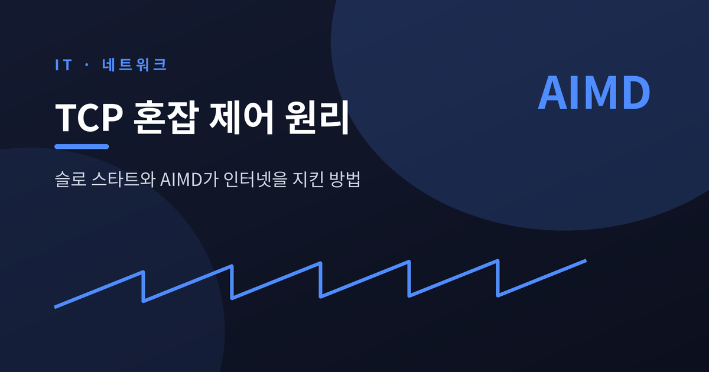
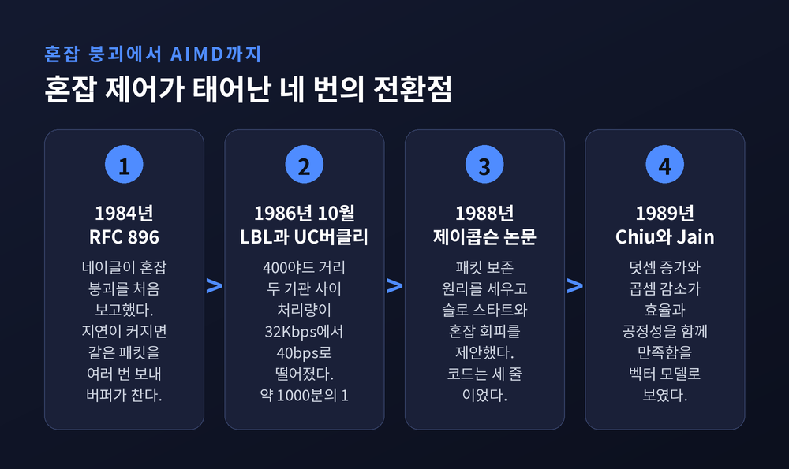
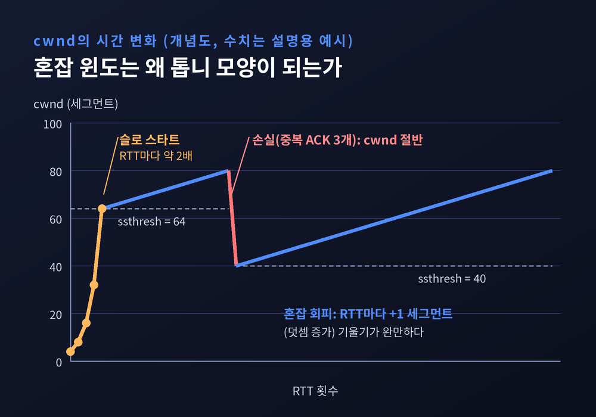
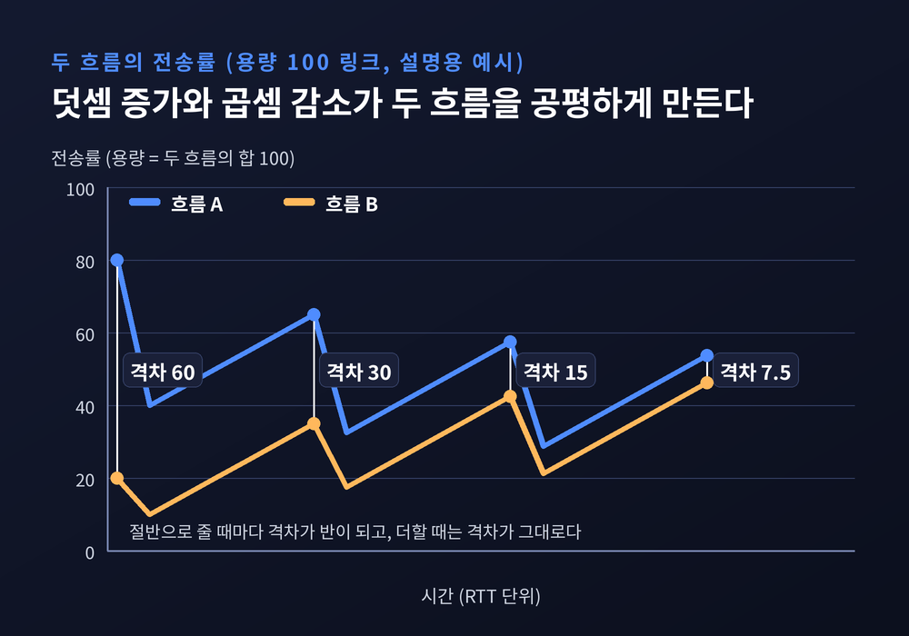
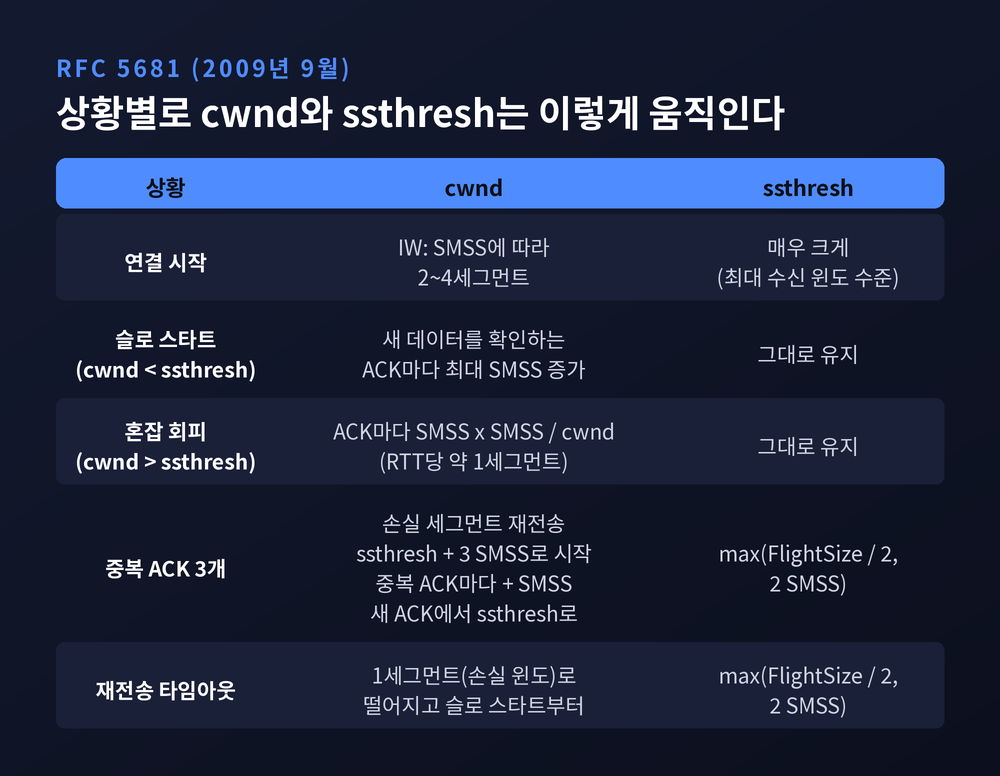
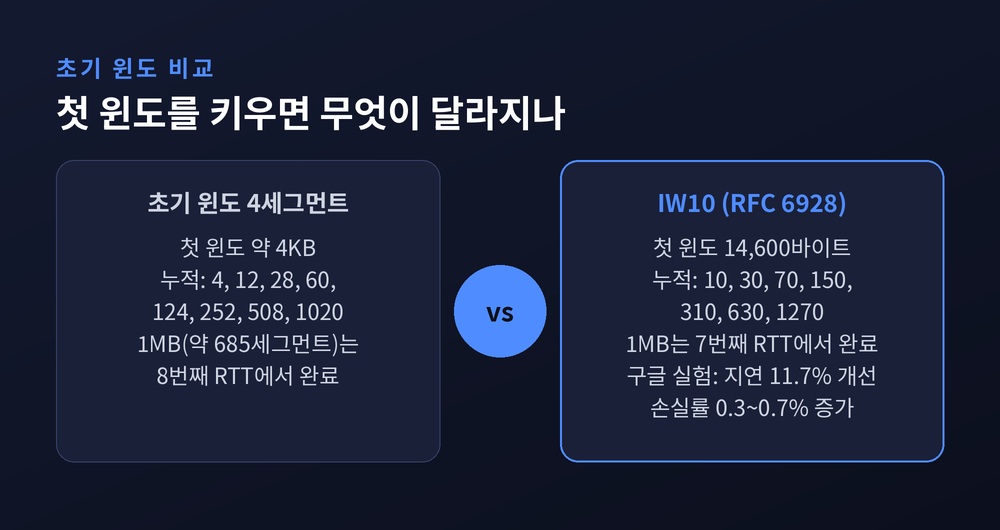
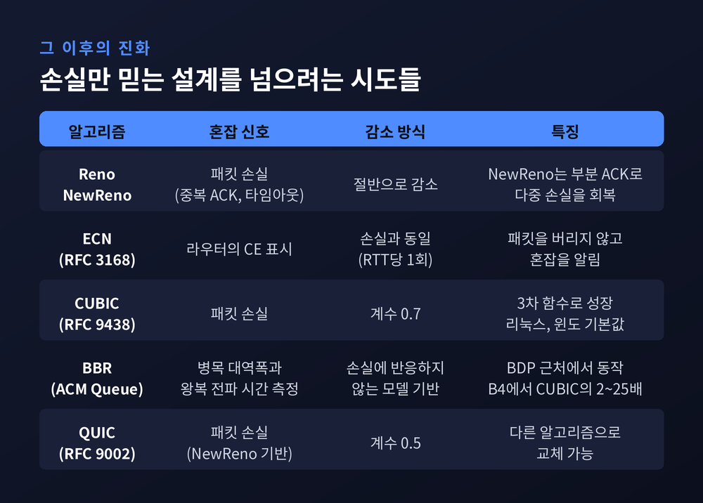

TCP 혼잡 제어 원리, 슬로 스타트와 AIMD가 인터넷을 지킨 방법

이번 글에서는 TCP 혼잡 제어가 어떤 원리로 인터넷의 속도를 나눠 쓰게 만드는지 정리해 보겠습니다. 핵심은 슬로 스타트와 AIMD라는 두 규칙입니다. 1986년의 붕괴 사건에서 출발해 오늘날의 CUBIC과 BBR까지 흐름을 따라가겠습니다.
세 줄 요약
- 혼잡 제어는 중앙 관제가 아니라 각 송신자가 스스로 속도를 조절하는 방식입니다. 패킷을 보낸 만큼 돌려받는지 보고 윈도를 키우고 줄입니다.
- 슬로 스타트는 작게 시작해 RTT마다 대략 두 배로 키우고, AIMD는 RTT마다 1 MSS씩 더하고 손실이 나면 절반으로 줄입니다. 이 비대칭이 효율과 공정성을 함께 얻는 열쇠입니다.
- 손실을 신호로 삼는 이 설계는 지금도 표준의 뼈대이지만 한계가 분명합니다. ECN, CUBIC, BBR은 그 한계를 각자의 방식으로 넘으려는 시도입니다.
■ 1986년, 32Kbps가 40bps가 된 날
1986년 10월, 로렌스 버클리 연구소(LBL)와 UC 버클리 사이의 데이터 처리량이 32Kbps에서 40bps로 떨어졌습니다. 두 기관은 400야드밖에 떨어져 있지 않았습니다. 속도가 약 1000분의 1이 된 셈입니다. 반 제이콥슨과 마이크 카렐스는 이 사건을 계기로 원인을 파고들었고, 결과를 1988년 논문 「Congestion Avoidance and Control」로 남겼습니다.
이런 현상에는 이름이 있습니다. 혼잡 붕괴(congestion collapse)입니다. RFC 2914는 이를 "네트워크에 걸린 부하가 늘었는데 네트워크가 해내는 유용한 일은 오히려 줄어드는 상태"로 정의합니다.
존 네이글은 이미 1984년 RFC 896에서 원리를 짚었습니다. 왕복 시간이 호스트의 재전송 타임아웃을 넘어서면, 호스트들은 같은 패킷을 여러 번 보내기 시작합니다. 버퍼는 중복 패킷으로 가득 차고, 그중 어떤 사본이 겨우 목적지에 닿습니다. 네이글은 이것이 곧 혼잡 붕괴라고 적었습니다. 바쁘게 일하는데 성과는 없는 상태입니다.

■ 패킷 보존과 슬로 스타트
제이콥슨이 세운 출발점은 단순합니다. "이전 패킷이 네트워크를 떠나기 전에는 새 패킷을 넣지 않는다." 이것이 패킷 보존 원리입니다. 윈도가 가득 찬 채 안정적으로 돌아가는 연결이라면, 이 원리만 지켜도 혼잡에 강해야 합니다.
그런데도 인터넷이 무너졌다면 보존이 어딘가에서 깨졌다는 뜻입니다. 논문은 세 경로를 꼽습니다. 연결이 평형 상태에 도달하지 못하는 경우, 송신자가 이전 패킷이 빠져나가기 전에 새 패킷을 밀어 넣는 경우, 자원 제약으로 평형을 유지하지 못하는 경우입니다. 이 가운데 첫째, 즉 연결을 시작하거나 다시 시작하는 순간을 다루는 장치가 슬로 스타트입니다.
방식은 이렇습니다. 혼잡 윈도 cwnd를 패킷 하나로 시작합니다. ACK가 하나 돌아올 때마다 cwnd를 하나 늘립니다. 한 바퀴(RTT)에 ACK가 윈도만큼 돌아오니 윈도는 대략 두 배가 됩니다. 이름은 느리게 시작한다는 뜻이지만 성장은 지수적입니다. 논문은 이를 "상태 변수 하나와 코드 세 줄"로 구현했다고 소개합니다.
이름에 속기 쉬운 대목이 있습니다. 슬로 스타트는 느린 알고리즘이 아니라 감으로 쏘지 않는 알고리즘입니다. 돌아오는 ACK가 곧 '지금 네트워크가 이만큼 소화한다'는 증거이고, 송신자는 그 증거가 오는 속도에 맞춰 창을 엽니다. 물론 이 두 배 증가는 이상적인 조건에서의 이야기입니다. 지연 ACK나 수신 윈도 같은 변수가 끼면 정확히 두 배가 되지는 않습니다.
■ 톱니의 정체, AIMD
슬로 스타트는 어디선가 멈춰야 합니다. RFC 5681은 cwnd가 임계값 ssthresh보다 작으면 슬로 스타트, 크면 혼잡 회피를 쓰도록 정합니다. ssthresh의 초기값은 광고 가능한 최대 수신 윈도만큼 크게 잡아야 하므로, 첫 손실이 나기 전까지는 슬로 스타트가 계속됩니다.
혼잡 회피 단계의 규칙이 바로 AIMD(덧셈 증가, 곱셈 감소)입니다. 새 데이터를 확인하는 ACK마다 cwnd를 1/cwnd만큼 늘립니다. 결과적으로 RTT당 약 1 MSS가 늘어납니다. 손실 신호가 오면 창을 절반으로 줄입니다. 그래프로 그리면 천천히 오르다 뚝 떨어지는 톱니 모양이 됩니다.

왜 하필 이 조합일까요. 1989년 치우(Chiu)와 자인(Jain)이 수학적으로 답했습니다. 두 사용자의 대역폭을 (x, y)로 놓으면, 효율성 선(x + y = 용량)과 공정성 선(x = y)이 만나는 점이 이상적인 지점입니다. 덧셈 증가는 두 사용자에게 같은 양을 보태므로 둘의 격차가 그대로 유지됩니다. 곱셈 감소는 두 사용자를 같은 비율로 줄이므로 격차도 함께 줄어듭니다. 논문은 덧셈 증가와 덧셈 감소를 짝지은 방식이 효율성 선에는 닿아도 "공정성이 결코 개선되지 않는다"는 점을 보였습니다.
숫자로 보면 더 분명합니다. 용량이 100인 링크에서 두 흐름이 (80, 20)으로 시작해 가득 찼다고 가정해 보겠습니다. 격차는 60입니다. 과부하가 나면 둘 다 절반이 되어 (40, 10)이고 격차는 30입니다. 합이 100이 될 때까지 함께 늘어나 (65, 35)가 되어도 격차는 30 그대로입니다. 다시 절반이 되면 (32.5, 17.5)로 격차는 15, 또 늘면 (57.5, 42.5)입니다. 감소가 일어날 때마다 격차가 반으로 줄어듭니다. 아무도 상대의 사용량을 모르는데도 결과적으로 공평해집니다. 이 부분이 이 설계의 가장 우아한 지점이라고 생각합니다.

■ RFC 5681이 정한 규칙 한 장 정리
이 알고리즘들을 표준으로 묶은 문서가 2009년 9월의 RFC 5681입니다. RFC 2581을 대체했습니다. 상황별로 cwnd와 ssthresh가 어떻게 움직이는지 표로 정리하면 이렇습니다.

중복 ACK 3개를 손실 신호로 삼는 대목은 조금 더 설명이 필요합니다. 수신자는 순서가 뒤바뀐 세그먼트가 도착하면 즉시 중복 ACK를 보내야 합니다. RFC는 중복 ACK가 세그먼트가 사라졌다는 뜻일 뿐 아니라 "세그먼트들이 여전히 네트워크를 빠져나가고 있다"는 뜻이라고 설명합니다. 길은 막혔지만 아직 흐르고 있으니, 타임아웃까지 기다리지 말고 곧바로 다시 보내자는 판단입니다.
세 번째 중복 ACK가 오면 ssthresh를 max(FlightSize/2, 2 SMSS)로 정합니다. FlightSize는 아직 확인되지 않은 채 떠 있는 데이터의 양입니다. 그리고 손실된 세그먼트를 재전송하고, cwnd를 ssthresh에 3 SMSS를 더한 값으로 둡니다. 이후 중복 ACK가 올 때마다 cwnd를 SMSS씩 부풀리다가, 새 데이터를 확인하는 ACK가 오면 cwnd를 ssthresh로 내리고 혼잡 회피로 돌아갑니다. 이것이 빠른 재전송과 빠른 회복입니다.
반대로 타임아웃까지 갔다면 사정이 훨씬 나쁩니다. 그때는 cwnd를 1 세그먼트(손실 윈도)까지 떨어뜨리고 슬로 스타트부터 다시 시작해야 합니다. 같은 손실이라도 중복 ACK로 알아채느냐, 타임아웃으로 알아채느냐에 따라 회복 속도가 크게 갈립니다.
빠른 회복에도 약점은 있었습니다. 한 윈도 안에서 패킷이 여러 개 사라지면 Reno는 불필요한 타임아웃을 겪거나 창을 연달아 줄였습니다. 2012년 4월 RFC 6582의 NewReno는 recover라는 변수로 이를 고쳤습니다. 일부만 확인하는 부분 ACK가 오면 다음 세그먼트를 재전송하며 회복을 이어가고, 전부 확인해야 회복을 끝냅니다.
■ 첫 윈도 하나가 체감 속도를 가른다
슬로 스타트에서 가장 중요한 숫자는 어쩌면 시작점입니다. 인터넷 흐름의 상당수가 슬로 스타트를 벗어나기도 전에 끝나는 짧은 웹 전송이기 때문입니다. RFC 6928도 이 점을 근거로 듭니다.
초기 윈도의 상한은 2002년 10월 RFC 3390에서 min(4 MSS, max(2 MSS, 4380바이트)), 즉 대략 4KB로 정해졌습니다. 2013년 4월 RFC 6928은 이를 min(10 MSS, max(2 MSS, 14600바이트))로 끌어올렸습니다. 흔히 IW10이라 부릅니다.
간단히 계산해 보겠습니다. 손실과 지연 ACK를 무시하고 MSS를 1460바이트로 두면, IW10은 첫 윈도가 14,600바이트입니다. 매 RTT마다 두 배가 된다고 하면 보낸 세그먼트 누적은 10, 30, 70, 150, 310, 630입니다. 약 1MB, 즉 약 685세그먼트를 보내려면 7번째 RTT가 필요합니다. 초기 윈도가 4세그먼트면 누적이 4, 12, 28, 60, 124, 252, 508, 1020으로 8번째 RTT에서야 끝납니다. RTT가 100ms인 경로라면 한 번의 왕복만큼, 즉 0.1초를 아끼는 계산입니다.
RFC 6928 문서는 구글의 실험 결과를 싣고 있습니다. 데이터센터 평균 지연은 11.7%(68ms) 줄었고, 저대역 지역은 8.7%(72ms) 줄었습니다. 대역폭과 지연의 곱이 큰 망에서는 20%를 넘는 개선이 있었습니다. 다만 공짜는 아니었습니다. 손실률이 0.3~0.7% 늘었고, 짧은 다운로드에서 버퍼블로트가 악화될 수 있다는 우려가 문서에 함께 적혀 있습니다. IW10 흐름과 기존 흐름 사이의 공정성도 지켜봐야 한다고 밝힙니다.

■ 손실률이 100분의 1이면 처리량은 10배
AIMD가 만드는 톱니를 통계로 평균 내면 재미있는 공식이 나옵니다. 1997년 매티스(Mathis) 등이 ACM SIGCOMM CCR에 발표한 모델입니다. 처리량은 (MSS / RTT) × C / √p입니다. p는 패킷 손실 확률이고, C는 조건에 따라 0.87에서 1.31 사이인 상수입니다. 주기적 손실에 매 패킷 ACK를 쓰는 경우는 1.22입니다.
논문의 결론은 한 문장입니다. 처리량은 RTT에 반비례하고 손실률의 제곱근에 반비례한다는 것입니다.
C를 1.22로 두고 MSS 1460바이트, RTT 100ms를 넣어 보겠습니다. 손실률 1%면 약 1.4Mbps가 나옵니다. 손실률이 0.01%로 100분의 1이 되면 약 14.2Mbps, 정확히 10배입니다. 회선이 아무리 빨라도 손실이 조금만 있으면 단일 연결은 속도를 내지 못합니다. 이 모델은 1/p개를 보낸 뒤 하나가 사라진다는 이상적인 가정 위에 서 있으니, 실제 값이 그대로 나온다고 보시면 곤란합니다. 경향을 읽는 도구로 쓰시길 권합니다.
■ 손실만 믿는 설계의 한계, 그리고 그 다음
여기까지가 고전 혼잡 제어입니다. 이 설계에는 뚜렷한 약점이 있습니다. 혼잡을 알려면 패킷이 한 번은 죽어야 한다는 점입니다.
예전엔 손실이 나야 혼잡을 알았습니다. 지금은 라우터가 패킷을 버리는 대신 표시를 남기는 ECN(RFC 3168, 2001년 9월)이 있습니다. IP 헤더의 CE 표시를 수신자가 ECE 플래그로 돌려주면, 송신자는 패킷을 잃은 것과 똑같이 창을 줄입니다. RTT당 한 번만 줄이고, 라우터는 원래 버렸을 상황에서만 표시하니 기존 흐름과 공존할 수 있습니다.
Reno의 선형 증가는 대역폭과 지연이 모두 큰 망에서 너무 느립니다. RFC 9438(2023년 8월)의 CUBIC은 윈도를 3차 함수 W(t) = C(t−K)³ + W_max로 키웁니다. 감소 계수는 0.7이고, 이전 최대치 근처에서는 천천히, 멀어지면 빠르게 움직입니다. 윈도 성장이 RTT가 아니라 마지막 혼잡 이후 경과 시간에 좌우되어 RTT가 다른 흐름 사이의 공정성도 나아집니다. 리눅스는 커널 2.6.19부터, 윈도는 10 1709와 서버 2016부터 기본값으로 씁니다.
BBR은 아예 손실을 신호로 쓰지 않습니다. 구글이 ACM Queue에서 설명한 대로, 버퍼가 병목 대역폭과 왕복 전파 시간의 곱(BDP)보다 훨씬 크면 손실 기반 제어가 버퍼를 계속 채워 RTT가 밀리초가 아니라 초 단위가 됩니다. 반대로 버퍼가 얕으면 손실을 혼잡으로 오해해 처리량이 낮아집니다. BBR은 병목 대역폭과 왕복 전파 시간을 측정해 그 곱 근처에서 동작합니다. 구글 B4에서는 CUBIC보다 처리량이 2배에서 25배 높았고, 유튜브에서는 전 세계 평균 중앙값 RTT가 53% 줄었다고 보고합니다.
QUIC(RFC 9002, 2021년 5월)도 같은 뿌리를 씁니다. 기본 혼잡 제어기가 NewReno 기반이며, 슬로 스타트와 혼잡 회피, 회복 기간이라는 세 상태를 갖습니다. 감소 계수는 0.5이고 초기 윈도는 IW10과 같은 취지의 식입니다. 다른 알고리즘은 송신자가 자유롭게 고를 수 있습니다.

정리하면 이렇습니다.
혼잡 제어는 인터넷에서 가장 성공한 분산 제어입니다. 참가자는 서로의 존재도 모르고, 협상도 하지 않습니다. 각자 자기 창 하나만 조절하는데, 그 결과가 링크를 공평하게 나눠 쓰는 상태입니다. 다만 이것은 모두가 같은 규칙을 지킬 때 성립합니다. 규칙을 지키지 않는 호스트 몇 대가 게이트웨이를 막을 수 있다는 1984년 네이글의 경고는 지금도 유효합니다. RFC 2914가 끝단의 혼잡 제어를 여전히 필수로 꼽는 이유입니다.
"조금 더 보내고, 막히면 절반만 물러난다."
이 한 줄이 1986년의 붕괴 이후 인터넷이 고전적 혼잡 붕괴를 되풀이하지 않은 이유의 상당 부분을 설명합니다. 다음에 영상이 잠깐 멈췄다가 다시 선명해지는 순간이 온다면, 그 뒤에서 누군가의 톱니가 한 칸 내려갔다 올라가는 중이라고 생각해 보셔도 좋겠습니다.